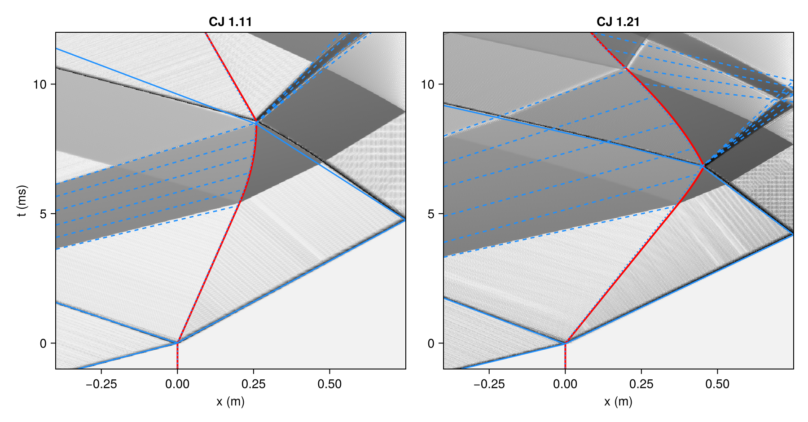
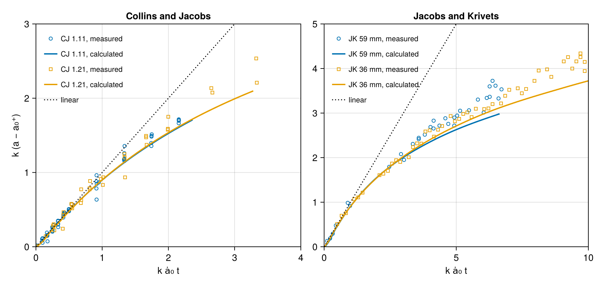
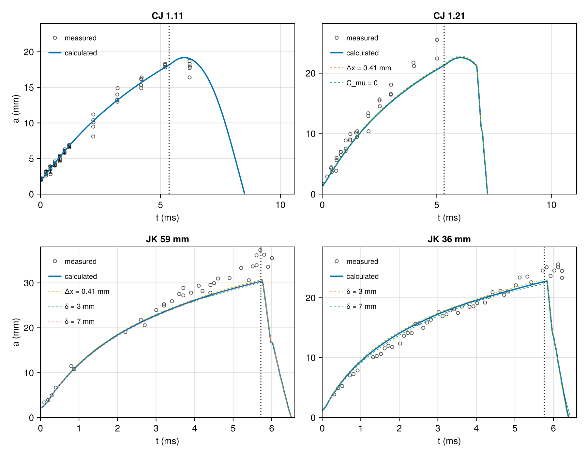
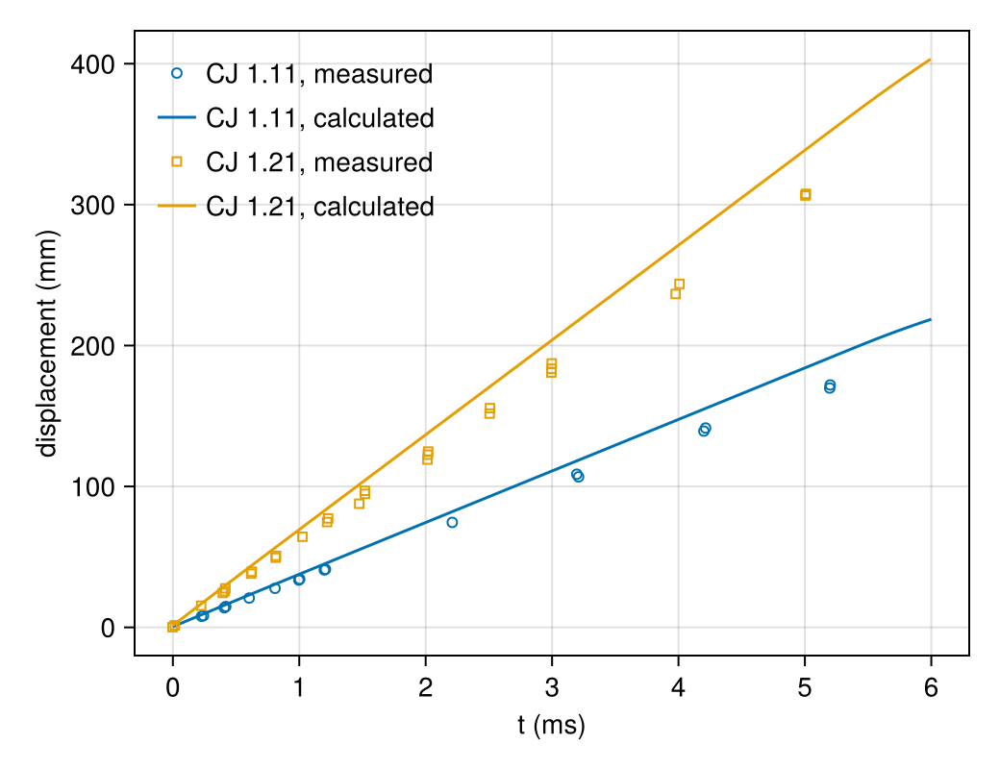
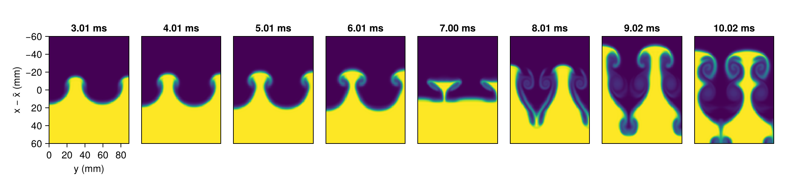

Jacobs air/SF6 experiments
This page compares the calculation with measurements. Collins and Jacobs (2002) and Jacobs and Krivets (2005) formed an interface between air and sulfur hexafluoride without a membrane in a vertical shock tube, gave it a single sinusoidal mode by rocking the tube, struck it with a weak shock from the air side and photographed it by planar laser-induced fluorescence of acetone carried in the air. One image was taken per firing, so each measured amplitude comes from a separate experiment, and the scatter between them is mostly the scatter of the initial amplitude from one firing to the next.
Four sets of experiments are calculated:
| set | shock Mach number | wavelength | initial amplitude | source |
|---|---|---|---|---|
| CJ 1.11 | 1.11 | 59.3 mm | 2.29 mm | Collins and Jacobs (2002) |
| CJ 1.21 | 1.21 | 59.3 mm | 1.83 mm | Collins and Jacobs (2002) |
| JK 59 mm | 1.292 | 59.3 mm | 2.90 mm | Jacobs and Krivets (2005) |
| JK 36 mm | 1.274 | 35.6 mm | 1.47 mm | Jacobs and Krivets (2005) |
The measured points were digitized from the published figures for this page; the files in examples/data/jacobs/ give, for each figure, the axis calibration, the digitizing uncertainty and the points. The parameters in the tables of the two papers are quoted, not digitized. Everything else on this page is calculated.
The comparison is quantitative while the interface has been struck once. A one-dimensional calculation of the whole tube, driver included, gives the time at which the first reflected wave reaches the interface, which ends that window for each set. After it, the calculation continues through the reflected waves, and the page describes what it shows without a measurement to compare.
The script takes its settings from the command line: ny, the nodes across half a wavelength, which sets the spacing $\Delta x = \lambda/(2n_y)$ of the main runs; grid, the sets also run at half that spacing, named without spaces and separated by commas; sweep, the sets also run with initial layers of 3 and 7 mm; and cmu, whether CJ 1.21 is also run without the artificial shear viscosity.
using CompactLES # re-exports MPI
using CompactLES.Regions
MPI.Initialized() || MPI.Init(threadlevel=:funneled)
using Printf
opt = CompactLES.script_args(ARGS, (ny = 36, grid = "CJ1.21,JK59mm",
sweep = "JK59mm,JK36mm", cmu = true, smoke = false,
cache = ""))
root = MPI.Comm_rank(MPI.COMM_WORLD) == 0Experiments
The driven section is 3.3 m long with a square cross-section 8.9 cm wide; the driver is 1 m long for Collins and Jacobs and 2 m for Jacobs and Krivets. The rocking sets up a standing wave of one and a half wavelengths across the tube, or two and a half for the shorter wavelength, with a crest at one wall and a trough at the other. The pre-shock interface is a layer about 5 mm thick, measured by Collins and Jacobs as the thickness of an error-function fit to the tracer concentration; Jacobs and Krivets do not give one for their sets.
The tables of the two papers give, for each set, the Atwood number before and after the shock, $A^-$ and $A^+$, the amplitude before and after it, $a_0^-$ and $a_0^+$, measured from the images, and the measured initial growth rate $\dot a_0$. The Atwood numbers after the shock and Jacobs and Krivets' interface velocities $\Delta V$ come from one-dimensional calculations; Collins and Jacobs' $\Delta V$ is the measured one.
W_tube = 0.089
experiments = [
(name = "CJ 1.11", Ms = 1.11, lambda = 2W_tube / 3, a0 = 2.29e-3, a0_plus = 2.10e-3,
A_minus = 0.604, A_plus = 0.616, dV = 33.0, rate = 3.92, driver = 1.0),
(name = "CJ 1.21", Ms = 1.21, lambda = 2W_tube / 3, a0 = 1.83e-3, a0_plus = 1.57e-3,
A_minus = 0.604, A_plus = 0.625, dV = 60.6, rate = 6.28, driver = 1.0),
(name = "JK 59 mm", Ms = 1.292, lambda = 2W_tube / 3, a0 = 2.90e-3, a0_plus = 2.15e-3,
A_minus = 0.605, A_plus = 0.635, dV = 92.6, rate = 10.55, driver = 2.0),
(name = "JK 36 mm", Ms = 1.274, lambda = 2W_tube / 5, a0 = 1.47e-3, a0_plus = 0.98e-3,
A_minus = 0.656, A_plus = 0.692, dV = 90.1, rate = 8.98, driver = 2.0),
]Gases
The gases start at 0.926 bar, the atmospheric pressure of the laboratory in Tucson, and 296 K. IdealMixture holds the room-temperature heat capacity of each species. Collins and Jacobs give the acetone in the air as about 25% by volume, and Jacobs and Krivets used two different concentrations without stating them. Here the acetone mole fraction of each set is the one at which the pre-shock Atwood number of the papers' tables is reproduced.
eos = IdealMixture(["Air", "C3H6O,acetone", "SF6"])
p0, T0 = 92_555.0, 296.0
density(state) = thermodynamic_state(eos, state).rho
sound_speed(state) = thermodynamic_state(eos, state).c
atwood(light, heavy) = (density(heavy) - density(light)) / (density(heavy) + density(light))
light_gas(acetone) = Prim(Y = mass_fractions(eos, "Air" => 1 - acetone,
"C3H6O,acetone" => acetone; basis = :mole),
p = p0, T_ion = T0)
air = light_gas(0.0)
sf6 = Prim(Y = mass_fractions(eos, "SF6" => 1.0; basis = :mole), p = p0, T_ion = T0)
function bisect(f, lo, hi; iterations = 60)
flo = f(lo)
for _ in 1:iterations
mid = (lo + hi) / 2
fmid = f(mid)
if (fmid > 0) == (flo > 0)
lo, flo = mid, fmid
else
hi = mid
end
end
return (lo + hi) / 2
end
acetone_fraction(A) = bisect(x -> atwood(light_gas(x), sf6) - A, 0.0, 0.6)shock_jump gives the state behind the incident shock, and riemann_interface the interaction of the shocked air with the SF6: the interface velocity $\Delta V$, the transmitted and reflected waves, and the gases either side of the interface, from which $A^+$. The amplitude compression is $a_0^+/a_0^- = 1 - \Delta V/W$ for a shock of speed $W$.
gases = map(experiments) do e
acetone = acetone_fraction(e.A_minus)
light = light_gas(acetone)
incident = shock_jump(eos, light, e.Ms)
impact = riemann_interface(eos, incident.post, sf6)
(; acetone, light, incident, impact, dV = impact.u_star,
A_plus = atwood(impact.left, impact.right),
compression = 1 - impact.u_star / incident.shock_speed)
endThe calculated values are listed below with the papers' values in parentheses; for the compression, the value in parentheses is the ratio $a_0^+/a_0^-$ of the measured amplitudes.
| set | acetone | $A^+$ | $\Delta V$, m/s | $1 - \Delta V/W$ |
|---|---|---|---|---|
| CJ 1.11 | 24.4% | 0.615 (0.616) | 37.6 (33.0) | 0.885 (0.917) |
| CJ 1.21 | 24.4% | 0.625 (0.625) | 68.8 (60.6) | 0.806 (0.858) |
| JK 59 mm | 24.0% | 0.632 (0.635) | 93.0 (92.6) | 0.755 (0.741) |
| JK 36 mm | 4.7% | 0.691 (0.692) | 91.6 (90.1) | 0.784 (0.667) |
The acetone fractions are 24% for Collins and Jacobs, as they state, and for the longer wavelength of Jacobs and Krivets, and 4.7% for the shorter one. The Atwood numbers after the shock agree with the papers' to 0.003. The interface velocities of Jacobs and Krivets agree to 1.7%. Those of Collins and Jacobs are measured, 12% below the calculated values: they attribute the difference to the two slots through which the gases leave the test section, which vent the gas behind the shock. Their own one-dimensional calculation gave 36.0 and 64.2 m/s, between the two. The amplitude compression measured from the images is weaker than $1 - \Delta V/W$ for Collins and Jacobs, close to it for the longer wavelength of Jacobs and Krivets, and stronger for the shorter one.
Tube
The interface lies 0.750 m above the end wall, the distance in the wave diagrams of Collins and Jacobs, and the driver holds air at 296 K. Neither the driver gas nor the position of the interface in the experiments of Jacobs and Krivets is stated; the same tube with the longer driver is assumed. The driver pressure of each set is the one that drives a shock of the measured Mach number into the light gas, for a diaphragm that opens instantly. The round driver has 3% more area than the square driven section, which is not represented.
The one-dimensional calculation runs from the closed end of the driver to the end wall, at a spacing of 1 mm, with SlipWallBC at both ends and the interface spread over the 5 mm layer. Time is counted from the arrival of the shock at the interface, and $x$ from the interface's initial position, increasing toward the end wall.
z_wall, delta = 0.750, 5e-3
function driver_state(light, Ms)
W = Ms * sound_speed(light)
p4 = bisect(p -> riemann_interface(eos, Prim(Y = air.Y, p = p, T_ion = T0),
light).right_speed - W, 1.01p0, 10p0)
return Prim(Y = air.Y, p = p4, T_ion = T0)
end
function tube_problem(e, g; a0 = 0.0, lambda = 1.0, layer = delta)
L = e.driver + 3.3
k = 2pi / lambda
x_d, x_i = e.driver, L - z_wall
problem = Problem(
name = "air/SF6 shock tube, $(e.name)",
eos = eos,
domain = ((0.0, L), (0.0, lambda / 2), (0.0, 1.0)),
bcs = ((SlipWallBC(), SlipWallBC()),
a0 == 0 ? PeriodicBC() : (SymmetryPlaneBC(), SymmetryPlaneBC()),
PeriodicBC()),
ic = Layers(g.light,
Layer(Slab(1, lo = (y, z) -> x_i + a0 * cos(k * y)), sf6;
width = layer / sqrt(pi)),
Slab(1, hi = x_d) => driver_state(g.light, e.Ms); profile = :erf),
)
return problem, L, x_i
endThe interface on a line of nodes along the tube is where the mole fraction of SF6 first rises through one half, searching from the driver:
function crossing(x, X)
i = findfirst(>(0.5), X)
return x[i-1] + (0.5 - X[i-1]) / (X[i] - X[i-1]) * (x[i] - x[i-1])
endThe run records the pressure, the velocity and the SF6 mole fraction along the tube every 20 µs.
function tube_1d(e, g; h = 1e-3)
problem, L, x_i = tube_problem(e, g; lambda = 1.0)
nx = round(Int, L / h) + 1
solver, Q = setup(problem, Numerics(n_global = (nx, 1, 1)))
rec = (t = Float64[], p = Vector{Float64}[], u = Vector{Float64}[],
X = Vector{Float64}[], x = Ref(Float64[]))
sample = Callback(EveryTime(20e-6), function (solver, Q)
x, p = line_sample(solver, Q, :p)
_, u = line_sample(solver, Q, :u)
_, X = line_sample(solver, Q, :X; species = 3)
rec.x[] = x
push!(rec.t, solver.t); push!(rec.p, p); push!(rec.u, u); push!(rec.X, X)
nothing
end)
run!(solver, Q; tfinal = 21e-3, callback = sample)
x = rec.x[]
position = [crossing(x, X) for X in rec.X]
at(v, xq) = v[searchsortedfirst(x, xq)]
p_i = [at(rec.p[k], position[k]) for k in eachindex(rec.t)]
u_i = [at(rec.u[k], position[k]) for k in eachindex(rec.t)]
k0 = something(findfirst(>(1.02p0), p_i), 1)
t = rec.t .- rec.t[k0]
result = (; x = x .- x_i, t, t_arrival = rec.t[k0], p = rec.p,
position = position .- x_i, p_i, u_i)
return result
end
tubes = mpi_main() do
[tube_1d(e, g) for (e, g) in zip(experiments, gases)]
endAfter the shock the interface moves at a constant velocity until the first reflected wave reaches it. The window ends at the first of two events: the interface velocity falling 0.5% below its value 0.5 ms after the shock, which is the head of the expansion reflected from the closed end of the driver, and the largest rise of pressure at the interface within 40 µs, which is the shock reflected from the end wall.
The times at which the waves reach the interface are listed below. That of the shock is counted from the opening of the diaphragm, and those of the two reflected waves from the arrival of the shock.
| set | shock, ms | head of the expansion, ms | reflected shock, ms |
|---|---|---|---|
| CJ 1.11 | 7.84 | 5.46 | 8.54 |
| CJ 1.21 | 7.20 | 5.42 | 6.80 |
| JK 59 mm | 6.72 | 5.84 | 5.82 |
| JK 36 mm | 6.04 | 5.88 | 5.86 |
The figure compares the calculation with the wave diagrams of Collins and Jacobs, Figures 3 and 4, digitized. The gray scale is the pressure difference between neighboring nodes, so that shocks show as dark lines and the expansion as a gray band; the red line is the calculated interface, and the blue lines are those of the diagrams: solid for shocks, dashed for characteristics of the expansions, dotted for the interface.

The transmitted shock reaches the end wall, and the shock it reflects reaches the interface, within 0.07 ms of the diagrams, and the interface turns where the diagrams turn it. The diagrams draw the interface at 37.4 and 67.7 m/s, the velocities of an unvented one-dimensional calculation like this one, not the measured ones. The head of the expansion reaches the interface 0.12 to 0.14 ms later than in the diagrams, which suggests a shorter or faster column of gas between the driver end and the interface than the one assumed here.
The single-shock window ends with the arrival of the expansion at 5.4 ms for both sets of Collins and Jacobs, and with the arrival of the shock reflected from the end wall at 5.8 ms for both sets of Jacobs and Krivets, whose longer driver delays the expansion past it.
Calculation
The two-dimensional calculation covers the same tube, driver included, and half a wavelength across it: the standing wave is symmetric about its crests and troughs, so SymmetryPlaneBC closes the channel at a crest and at the next trough, as on Richtmyer–Meshkov instability. A symmetry plane lies half a cell beyond the last row of nodes. The side walls of the tube and their boundary layers are not represented, and neither is the slight flow of the two gases toward the slots before the shock, about 1 cm/s, nor the velocity of the standing wave, which the firing was timed to catch at its minimum.
The interface is $x_i + a_0^-\cos ky$ with the measured pre-shock amplitude, spread by Layers into the error-function profile of thickness $\delta$ used for the one-dimensional runs. The spacing is uniform, $\Delta x = \lambda/(2n_y)$, from 0.3 m above the interface to the end wall, and grows to $4\Delta x$ toward the driver end, where the flow is one-dimensional, through a $\tanh$ blend over about 60 nodes. The main runs have $\lambda/\Delta x = 72$: $\Delta x$ is 0.82 mm at the longer wavelength and 0.49 mm at the shorter, so the 5 mm layer spans 6 and 10 spacings before the shock compresses it. The equations are inviscid: the molecular viscosity and diffusivity, $O(10^{-5})$ m²/s, are below what the grid resolves at these Reynolds numbers, and the artificial properties and the filter act at the grid scale. The numerics are otherwise the defaults.
logcosh(z) = (a = abs(z); a + log1p(exp(-2a)) - log(2))
function tube_stretch(L, x_fine, h; ratio = 4.0, blend = 60)
fine = L - x_fine
ξb = (1 - fine / L) / (1 + (ratio - 1) * fine / L)
n = round(Int, fine / (h * (1 - ξb))) + 1
w = blend / (n - 1)
coarse(ξ) = ξ / 2 - (w / 2) * (logcosh((ξb - ξ) / w) - logcosh(ξb / w))
G(ξ) = ξ + (ratio - 1) * coarse(ξ)
G1 = G(1.0)
return n, Stretch(ξ -> L * G(ξ) / G1,
ξ -> L * (1 + (ratio - 1) * (1 + tanh((ξb - ξ) / w)) / 2) / G1)
endEvery 5 µs the run samples the SF6 mole fraction along the two lines of nodes next to the symmetry planes: the line next to $y = 0$, through the bubble, where the air advances into the SF6, and the line next to $y = \lambda/2$, through the spike, where the SF6 advances into the air. The amplitude is half the distance between the interface on the two lines, the definition of Collins and Jacobs, and the mean of the two is the interface position whose displacement they report. At the times of the images in the papers it also keeps the mole fraction around the interface.
frame_times = Dict(
"CJ 1.11" => [0.018, 0.607, 1.212, 2.207, 3.217, 4.215, 5.204, 6.221, 7.026, 8.027,
9.054, 10.053],
"CJ 1.21" => [0.023, 0.632, 1.031, 1.478, 2.014, 2.502, 3.011, 4.009, 5.015, 6.006,
7.005, 8.009, 9.021, 10.020, 11.001],
"JK 59 mm" => [0.06, 0.26, 0.66, 1.16, 1.76, 2.26, 2.66, 3.06, 3.46, 3.96, 4.56,
5.26, 5.86, 6.06],
"JK 36 mm" => [0.01, 0.23, 0.53, 0.83, 1.23, 1.63, 2.13, 2.53, 2.93, 3.23, 3.63,
4.33, 5.03, 5.73, 6.13],
) # ms after the shock reaches the interface
t_after = Dict("CJ 1.11" => 10.6e-3, "CJ 1.21" => 11.1e-3, "JK 59 mm" => 6.6e-3,
"JK 36 mm" => 6.6e-3)
function simulate(j; ny = opt.ny, layer = delta, C_mu = nothing)
e, g, w = experiments[j], gases[j], tubes[j]the run's label, which also names the file the finished run is kept in
key = @sprintf("%s_ny%d_d%.0f%s", replace(e.name, " " => ""), ny, 1e4layer,
C_mu === nothing ? "" : @sprintf("_cmu%g", C_mu))
problem, L, x_i = tube_problem(e, g; a0 = e.a0, lambda = e.lambda, layer)
h = e.lambda / 2 / ny
nx, stretch = tube_stretch(L, x_i - 0.3, h)
art = C_mu === nothing ? ArtificialProperties() : ArtificialProperties(; C_mu)
ranks = MPI.Comm_size(MPI.COMM_WORLD)
solver, Q = setup(problem, Numerics(n_global = (nx, ny, 1), art = art,
execution = Execution(dims = (ranks, 1, 1)),
stretch = (stretch, nothing, nothing)))
rec = (t = Float64[], bubble = Float64[], spike = Float64[], x = Ref(Float64[]))
sample = Callback(EveryTime(5e-6), function (solver, Q)
x, Xb = line_sample(solver, Q, :X; index = (1, 1), species = 3)
_, Xs = line_sample(solver, Q, :X; index = (ny, 1), species = 3)
push!(rec.t, solver.t)
push!(rec.bubble, crossing(x, Xb) - x_i)
push!(rec.spike, crossing(x, Xs) - x_i)
rec.x[] = x
nothing
end)
times = w.t_arrival .+ 1e-3 .* frame_times[e.name]
frames = []
keep = Callback(AtTime(times), function (solver, Q)
snap = field_snapshot(solver, Q; fields = (:X,))
root || return nothing
x = snap.coords[1]
mean = (rec.bubble[end] + rec.spike[end]) / 2 + x_i
near = findall(xx -> abs(xx - mean) < 0.07, x)
push!(frames, (t = solver.t - w.t_arrival, x = x[near] .- x_i, y = snap.coords[2],
X = snap[:X][near, :, 1, 3]))
nothing
end)
tfinal = w.t_arrival + t_after[e.name]
wall = @elapsed run!(solver, Q; tfinal, callback = (sample, keep))
result = (; key, name = e.name, ny, h, nx, layer, C_mu, wall, steps = solver.step,
t = rec.t .- w.t_arrival, bubble = rec.bubble, spike = rec.spike, frames)
return result
endThe main runs come first, then the finer grid, the other layer thicknesses and the run without the artificial shear viscosity.
named(list) = [j for j in eachindex(experiments)
if replace(experiments[j].name, " " => "") in split(list, ',')]
plan = Tuple{Int,NamedTuple}[(j, (;)) for j in eachindex(experiments)]
append!(plan, [(j, (ny = 2opt.ny,)) for j in named(opt.grid)])
append!(plan, [(j, (layer = d,)) for j in named(opt.sweep) for d in (3e-3, 7e-3)])
opt.cmu && push!(plan, (2, (C_mu = 0.0,)))
runs = mpi_main() do
[simulate(j; kw...) for (j, kw) in plan]
endAmplitude
The main run of each set is the one at $\lambda/\Delta x = 72$ with the 5 mm layer and the default artificial properties.
The papers normalize the amplitude by the wavenumber and time by the measured initial growth rate, $k(a - a_0^+)$ against $k\dot a_0 t$. The calculation is given the same treatment. Its $a_0^+$ is the smallest amplitude while the shock crosses the interface, and its $\dot a_0$ the slope of a straight line fitted to its amplitude over the interval in which the experiment's $k\dot a_0 t$ stays below 0.5, the extent of the early data from which Collins and Jacobs fitted their rate at Mach 1.11.
The calculated amplitudes after the shock are 2.00, 1.45, 2.16 and 1.15 mm, against 2.10, 1.57, 2.15 and 0.98 mm measured, and the early growth rates 4.17, 5.83, 10.97 and 10.34 m/s, against 3.92 ± 0.23, 6.28 ± 0.60, 10.55 and 8.98 m/s. Richtmyer's rate for a sharp interface, $kA^+\Delta V a_0^+$ with the calculated $A^+$, $\Delta V$ and compression, is 4.96, 6.71, 13.64 and 12.88 m/s, 15 to 25% above every calculated rate; Richtmyer–Meshkov instability accounts for that reduction by the layer. The calculated and measured rates differ mostly through the amplitude after the shock: divided by it, the two rates agree to within 4% for three of the sets, and for CJ 1.11 the calculated one is 12% higher, as the calculated interface velocity is 11% higher. The interface velocity of CJ 1.21 is also 11% above the measured one, while its rate divided by the amplitude matches the measurement.
The measured points of Collins and Jacobs, Figure 14, and of Jacobs and Krivets, Figure 7, are in these variables, each set normalized by its own $a_0^+$, its measured $\dot a_0$ and its $k$; converting the points of Figure 14 back to amplitude and time with the post-shock amplitude and the measured rate reproduces Figure 12 to 0.06 mm. The comparison ends 0.1 ms before the reflected wave reaches the interface in the one-dimensional calculation, since in two dimensions it reaches the tips of the bubbles or the spikes first.
Jacobs and Krivets measure the distance between the points and a model by the mean fractional deviation $\Delta = N^{-1}\sum_i |y_i - y_r(x_i)| / y_r(x_i)$, with $y = k(a - a_0^+)$, over their whole Figure 7. Their Table II gives 7.5% for the best of the models, that of Sadot et al. (1998), and 4.6% for a fourth-degree polynomial fitted to the points, which they take as the floor the scatter sets. The same measure is computed here for each set over its points inside the window, against the calculation, against the line of unit slope that is linear theory, and against a fourth-degree polynomial through the origin fitted to that set's points.
A measured point is in the window if its time, $x_i/k\dot a_0$ with the measured rate, is; the points below $k\dot a_0 t = 0.1$, where the denominator vanishes, are left out.

| set | points | $\Delta$, calculation | $\Delta$, linear | $\Delta$, polynomial |
|---|---|---|---|---|
| CJ 1.11 | 49 | 9.5% | 11.7% | 8.0% |
| CJ 1.21 | 32 | 11.2% | 13.8% | 8.1% |
| JK 59 mm | 30 | 15.1% | 32.9% | 5.0% |
| JK 36 mm | 42 | 5.9% | 37.8% | 3.1% |
For Collins and Jacobs, whose windows end at $k\dot a_0 t$ of 2.2 and 3.5, the calculation lies between linear theory and the polynomial, closer to the polynomial, which is as close as any curve can come to points with this scatter. For Jacobs and Krivets the calculation follows the shorter wavelength to the end of its window, $k\dot a_0 t = 9.2$, within 5.9%, closer than the 7.5% of the best model in their Table II over both sets, and falls below the longer wavelength in the second half of its window, which ends at $k\dot a_0 t = 6.4$.
The last 3 and 7 points of the two sets of Jacobs and Krivets, at 5.8 to 6.2 ms, lie past the calculated windows and are left out of $\Delta$. They continue the growth of the earlier points, while in the calculation the shock reflected from the end wall has reached the interface by then. The reflected shock therefore arrived later in their experiments than in the assumed tube: the interface was some centimetres farther from the end wall than in the experiments of Collins and Jacobs.
Amplitude in millimetres
The normalization removes the growth rate from the comparison. In the experiments' own units, the amplitude of Collins and Jacobs at Mach 1.11 is Figure 12, every firing, and Figure 13, means of five firings with their 95% confidence intervals; for the other sets it is the dimensionless points converted back with the papers' $k$, $a_0^+$ and $\dot a_0$. The calculated amplitude is drawn over the whole run, and the vertical line marks the end of the single-shock window.

The calculated amplitude of CJ 1.11 passes through the firings of Figure 12 and the confidence intervals of Figure 13 up to 5.2 ms, within 5% of the mean of the firings at every time. That of CJ 1.21 starts from its smaller amplitude after the shock and stays 8 to 16% below the mean of the points. For JK 59 mm the calculation is within 2% of the points to 2.5 ms, 7 to 8% below them at 3.5 to 4.5 ms and 13% below at 5.6 ms. For JK 36 mm it is 11 to 13% above them in the first 2 ms, from its larger amplitude after the shock, and within 6% afterwards. At the end of each window the reflected wave stops the growth. The expansion decelerates the interface, and in the frame of the interface the deceleration acts as a gravity pointing into the SF6, which leaves the heavy gas below the light and the ripple stable; the reflected shock, crossing from the heavy gas into the light, reverses the ripple. The last firings of CJ 1.11, at 6.2 ms, lie below the calculated amplitude there, which has kept growing through 0.8 ms of the expansion.
Interface displacement
Collins and Jacobs measured the displacement of the interface, the mean of the distances traveled by the crest and the trough nearest the center of the tube, Figure 11, and fitted 33.0 and 60.6 m/s. The calculated displacement, the mean of the bubble and spike positions, is fitted over the same interval, 0.3 to 4 ms.

The calculated interface moves at 36.7 and 67.3 m/s, within 2.5% of the one-dimensional interface velocities and 11% above the measured ones. The difference is the venting through the slots, which a channel without them cannot represent; in the dimensionless comparison above it cancels to the extent that the growth rate is proportional to the velocity jump.
Sensitivity
Three further sets of runs test what the comparison rests on. CJ 1.21 and JK 59 mm are repeated at half the spacing, $\Delta x = 0.41$ mm or 144 points per wavelength. The layer thickness of Jacobs and Krivets is not stated, so their two sets are repeated with layers of 3 and 7 mm around the 5 mm of Collins and Jacobs. CJ 1.21 is repeated without the artificial shear viscosity, C_mu = 0.
The early growth rate and the mean fractional deviation of each run are
| run | $\dot a_0$, m/s | $\Delta$ |
|---|---|---|
| CJ 1.21, $\Delta x$ = 0.82 mm | 5.83 | 11.2% |
| CJ 1.21, $\Delta x$ = 0.41 mm | 5.99 | 11.4% |
CJ 1.21, C_mu = 0 | 5.83 | 11.2% |
| JK 59 mm, $\Delta x$ = 0.82 mm | 10.97 | 15.1% |
| JK 59 mm, $\Delta x$ = 0.41 mm | 11.28 | 15.1% |
| JK 59 mm, 3 mm layer | 10.89 | 15.9% |
| JK 59 mm, 7 mm layer | 10.83 | 14.9% |
| JK 36 mm, $\Delta x$ = 0.49 mm | 10.34 | 5.9% |
| JK 36 mm, 3 mm layer | 10.59 | 5.9% |
| JK 36 mm, 7 mm layer | 9.89 | 5.5% |
On the finer grid the amplitude rises by 1 to 2% and $\Delta$ moves by less than 0.3 points for both sets, so the differences from the measurements above are not set by the resolution of the main runs. The layer thickness moves the early growth rate of JK 59 mm by less than 1% and $\Delta$ by less than one point. For JK 36 mm, whose wavelength is shorter, the layers of 3 and 7 mm move the early rate by +2.4% and −4.4% and leave $\Delta$ within 0.4 points. Without the artificial shear viscosity the amplitude of CJ 1.21 is unchanged to 0.001 mm through the window and the mole fraction to 0.001 until 5 ms; the two runs part only after the reflected shock, by up to 0.04 in mole fraction at 11 ms. The single-shock growth therefore carries no information on the shear viscosity's coefficient.
After the window
Collins and Jacobs, Figures 5 and 6, and Jacobs and Krivets, Figures 5 and 6, show the interface at the times of the frames below, which follow the calculation of CJ 1.21 through the expansion and the reflected shock. The tube runs down the page, as in the photographs, the air above, and the half wavelength is mirrored across both symmetry planes to the width of the tube, one and a half wavelengths.

Through 5 ms the frames follow the measured sequence: the sinusoid steepens into spikes of SF6 rising into the air and broader bubbles of air sinking into the SF6, and the spikes roll up into mushroom caps. Collins and Jacobs see the first waviness on the vortex coils, a secondary instability, at 6.0 ms, Figure 6(k); the vortex cores of the calculation, at 72 points per wavelength and in two dimensions, stay smooth. The expansion then decelerates the interface and the reflected shock passes through it at 6.8 ms: by 7 ms the spikes have collapsed and the layer is nearly flat, and from 8 ms the interface is inverted, with air reaching down into the SF6 and the vorticity of reshock rolling up along the new stems. The papers describe the same inversion, by the expansion and the reflected shock, and a flow that is turbulent by 11 ms, with mixed fluid the calculation does not form.
What this checks
- The one-dimensional tube reproduces the wave diagrams of Collins and Jacobs, which sets the window of each set: 5.4 ms for Collins and Jacobs, ended by the expansion from the driver, and 5.8 ms for Jacobs and Krivets, ended by the shock reflected from the end wall.
- In the variables of the papers, the calculation is closer to the measured amplitudes than linear theory for all four sets, close to the scatter for Collins and Jacobs, and within 5.9% to $k\dot a_0 t = 9.2$ for the shorter wavelength of Jacobs and Krivets. The measured growth of Jacobs and Krivets continues past the calculated arrival of the reflected shock, so their interface was farther from the end wall than assumed.
- The amplitude just after the shock differs from the measured one by up to 17%, in both directions, and the growth rate divided by it agrees with the measurement to 4% for three sets and 12% for CJ 1.11.
- The interface moves 11% faster than in the experiments of Collins and Jacobs, as their slots, absent here, predict.
- After the reflected waves the calculated interface inverts as the photographs show, without the secondary instability and the mixed fluid that the experiments develop in three dimensions.
The code that reduces the runs to the figures and the numbers quoted is left out of this page and shown on the page of the complete script.
The figures on this page were computed at commit 671fb0f on 2026-10-06, in 15 h, by mpiexec -n 8 julia --project=docs -t 1 examples/jacobs_air_sf6.jl.
This page was generated using Literate.jl.